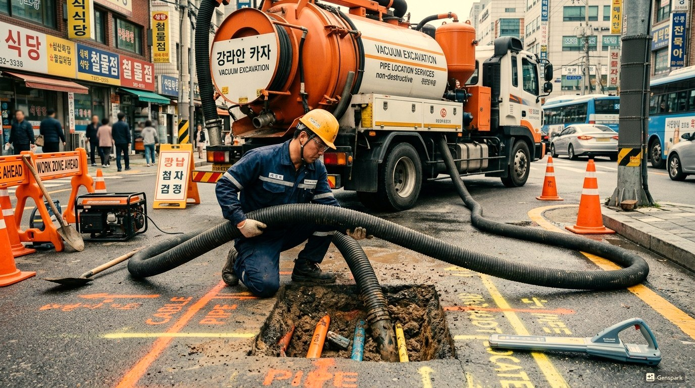
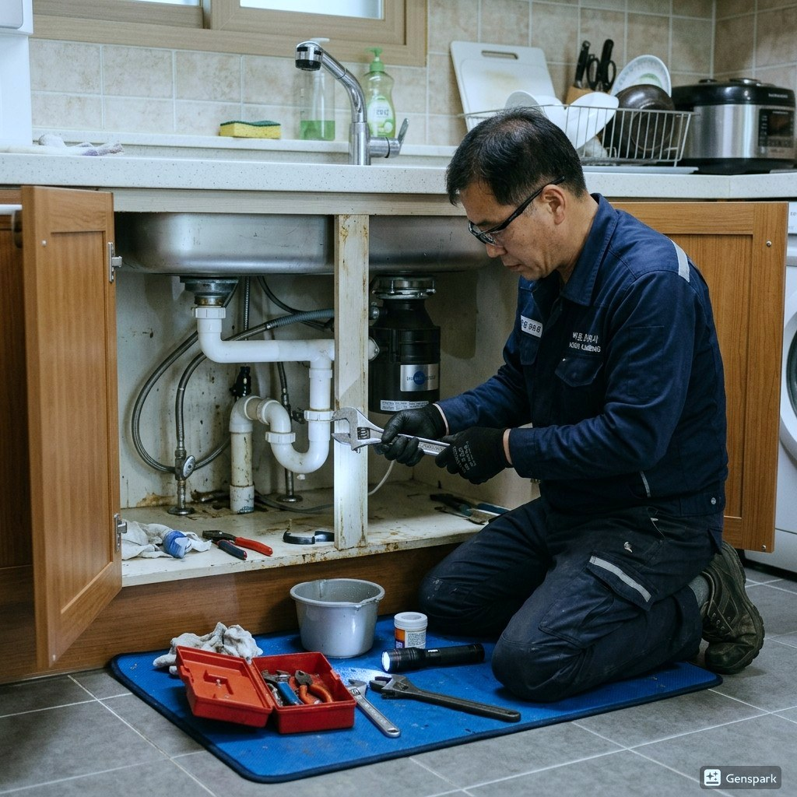

고양 하수구막힘 원인과 해결
고양의 하수구막힘 문제는 지역의 도시 특성과 밀접한 관련이 있습니다. 1980년대 신도시. 고층 아파트 단지 밀집, 초대형 쇼핑몰 다수로 배관 부하 높음 이러한 특성으로 인해 고양의 하수구막힘 발생 빈도가 높은 편입니다.

▲ 고양 현장에서 전문 장비로 하수구막힘 해결 작업 중
제우스시설관리는 하수구막힘 문제를 해결하기 위해 최첨단 전문 장비를 갖추고 있습니다. 드레인 기계로 막힘을 물리적으로 제거하고, 관로 내시경 카메라로 정확한 원인을 파악하며, 고압세척기로 배관 내부를 완벽하게 청소합니다. 고양 전역에 서비스 인력을 배치하여 28분 내 출동 가능합니다.

▲ 전문 장비를 이용한 하수구막힘 해결 작업
고양 하수구막힘 해결 방법
고양에서 하수구막힘가 발생하는 주요 원인 중 하나는 '주변 건설 공사로 인한 모래, 자갈, 시멘트 입자 유입'입니다. 이는 고양의 지리적 특성과 도시 구조로 인한 자연스러운 결과입니다. 문제를 방치하면 더 큰 배관 손상으로 이어질 수 있으므로, 초기 증상이 보일 때 즉시 전문가 상담을 받는 것이 중요합니다.
제우스시설관리 전문 장비
✅ 드레인 기계 - 스프링 와이어로 배관 내 이물질을 물리적으로 파쇄·제거
✅ 관로 내시경 카메라 - 배관 내부를 실시간 영상으로 확인하여 정확한 진단
✅ 고압세척기 - 최대 200bar 고압수로 배관 내벽 오염물 완벽 세척
✅ 관로탐지기 - 매설 배관의 위치와 깊이를 정확히 탐지

▲ 제우스시설관리의 최첨단 장비로 신속하고 정확하게 처리
고양 서비스 지역
고양 전 지역에 28분 내 출동합니다. 야간·주말·공휴일 추가 요금 없이 동일한 서비스를 제공합니다.
고양에서 하수구막힘 문제를 경험하고 계신가요? 제우스시설관리는 24시간 긴급 대응, 출장비 무료, 문제 미해결시 비용 0원의 정책으로 고양 주민들의 신뢰를 얻고 있습니다. 전문 기술자들이 정확한 원인 파악 후 맞춤형 해결책을 제시합니다.
고양 하수구막힘 전문가 조언
하수구막힘은 가장 흔한 배관 문제 중 하나로, 음식물 찌꺼기, 기름때, 머리카락, 이물질 등이 복합적으로 작용하여 발생합니다. 특히 오래된 건물에서는 배관 내부의 스케일(석회 침전물)이 관 지름을 좁혀 막힘이 더 자주 발생합니다.
제우스시설관리의 하수구막힘 해결 프로세스는 ①내시경 진단→②원인 파악→③드레인 기계 투입→④고압세척→⑤최종 점검의 5단계로 진행됩니다. 이 체계적인 접근 방식으로 재발률을 최소화합니다.
고양 하수구막힘 작업 프로세스
Step 1. 전화 접수 및 상담
증상을 상세히 청취하고, 예상 원인과 준비 장비를 사전에 결정합니다.
Step 2. 28분 내 현장 도착
가장 가까운 전문 기술자가 필요 장비를 모두 갖추고 출동합니다.
Step 3. 내시경 카메라 진단
관로 내시경으로 배관 내부를 실시간 영상으로 확인하여 정확한 막힘 위치와 원인을 파악합니다.
Step 4. 드레인 기계 투입
스프링 와이어를 배관에 투입하여 막힌 이물질을 물리적으로 파쇄하고 관통합니다.
Step 5. 고압세척
최대 200bar의 고압수로 배관 내벽에 남은 오염물을 완벽하게 제거합니다.
Step 6. 최종 점검 및 확인
내시경으로 배관 상태를 재확인하고, 고객에게 작업 결과를 영상으로 보여드립니다.
고양 하수구막힘 실제 현장 사례
📋 세탁기 배수 불량
건물 유형: 10년 된 아파트 | 지역: 고양
세탁기 가동 시 배수가 제대로 되지 않아 물이 넘침. 배수관 내시경 확인 결과, 섬유질과 세제 찌꺼기가 배관 벽면에 축적. 고압세척으로 완전 제거, 작업 시간 30분.
📋 화장실 하수구 역류
건물 유형: 지하 1층 상가 | 지역: 고양
폭우 후 화장실 하수구에서 오수가 역류. 오수 본관 점검 결과, 나무 뿌리가 배관 이음부를 침투하여 통로를 막고 있었음. 뿌리 제거 후 고압세척, 역류 방지 밸브 설치 권고. 작업 시간 1시간 30분.
고양 하수구막힘 예상 비용 안내
예상 비용: 5만원~15만원 (부가세 별도)
비용 결정 요소: 막힘 정도, 배관 길이, 작업 난이도
💡 제우스시설관리 특별 정책
✅ 출장비 무료 - 현장 방문 후 견적만 받고 취소해도 비용 없음
✅ 미해결시 비용 0원 - 문제가 해결되지 않으면 한 푼도 받지 않음
✅ 사전 견적 안내 - 작업 시작 전 정확한 비용을 먼저 안내
✅ 추가 비용 없음 - 야간/주말/공휴일 동일 요금
⚠️ 고양 하수구막힘 주의사항
시중에 판매되는 화학 세정제(락스, 가성소다 등)는 일시적 효과는 있지만, 배관 부식을 유발하여 장기적으로 더 큰 비용이 발생할 수 있습니다. 특히 PVC 배관이 아닌 주철관에는 절대 사용하지 마세요.
고양 하수구막힘 자주 묻는 질문
Q. 야간에도 고양 하수구막힘 출동 가능한가요?
A. 네, 제우스시설관리는 24시간 365일 운영합니다. 야간, 주말, 공휴일에도 추가 요금 없이 동일한 서비스를 제공하며, 28분 내 현장 도착을 목표로 합니다.
Q. 고양 하수구막힘 비용은 얼마인가요?
A. 막힘 정도와 위치에 따라 다르지만, 기본 출장비 무료이며 작업 전 현장 견적을 정확히 안내합니다. 미해결 시 비용 0원 정책을 운영하고 있어 안심하실 수 있습니다.
Q. 고양 하수구가 막히면 직접 뚫어도 되나요?
A. 가정용 도구로 일시적 해소는 가능하지만, 근본 원인(배관 내 이물질 축적, 관 파손 등)을 해결하지 못하면 반복됩니다. 전문 장비(드레인 기계, 내시경 카메라)를 사용해야 정확한 진단과 완전한 해결이 가능합니다.